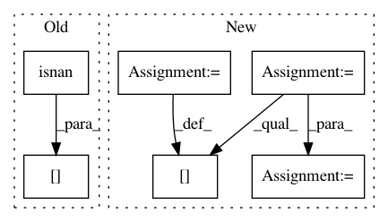

d141d7538e5aef40d31d7fea444fab30b85b3b35,cellprofiler/modules/classifyobjects.py,ClassifyObjects,run_two_measurements,#ClassifyObjects#Any#,514
Before Change
else:
raise ValueError("Unknown threshold method: %s" %
threshold_method.value)
in_high_class.append(values[~np.isnan(values)] >= t)
feature_names = self.get_feature_name_matrix()
num_values = len(values)
for i in range(2):
After Change
object_codes = class_1.astype(int)+class_2.astype(int)*2 + 1
object_codes = np.hstack(([0], object_codes))
object_codes[np.hstack((False,np.isnan(values)))] = 0
nobjects = len(class_1)
mapping = np.zeros(nobjects+1, int)
mapping[1:] = np.arange(1, nobjects+1)
for i in range(2):
mapping[np.isnan(saved_values[i])] = 0
labels = object_codes[mapping[objects.segmented]]
colors = self.get_colors(4)
image = colors[labels,:3]
In pattern: SUPERPATTERN
Frequency: 3
Non-data size: 6
Instances
Project Name: CellProfiler/CellProfiler
Commit Name: d141d7538e5aef40d31d7fea444fab30b85b3b35
Time: 2013-08-22
Author: mbray@broadinstitute.org
File Name: cellprofiler/modules/classifyobjects.py
Class Name: ClassifyObjects
Method Name: run_two_measurements
Project Name: biolab/orange3
Commit Name: 088b10a9b6621472af54635e761bda0dd775836f
Time: 2012-09-26
Author: janez.demsar@fri.uni-lj.si
File Name: Orange/classification/majority.py
Class Name: MajorityLearner
Method Name: __call__
Project Name: vc1492a/PyNomaly
Commit Name: 2526879b1f941c887eeb24a267b5ea010e20d5d7
Time: 2017-12-17
Author: vc1492a@gmail.com
File Name: PyNomaly/loop.py
Class Name: LocalOutlierProbability
Method Name: _ssd